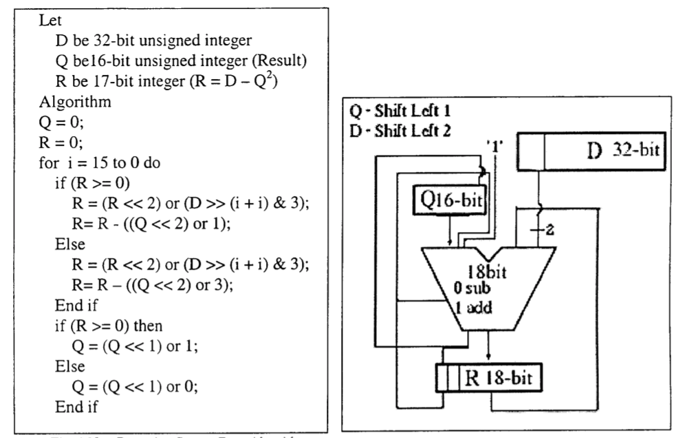
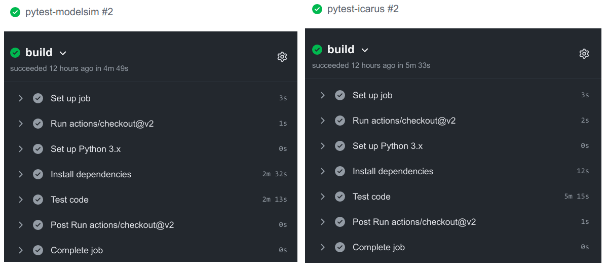

Прокачиваем скрипты симуляции HDL с помощью Python и PyTest
Posted on 17 Jan 2021 in Automation • 11 min read
Все делают это. Ну ладно, не все, но большинство. Пишут скрипты, чтобы симулировать свои проекты на Verilog, SystemVerilog и VHDL. Однако, написание и поддержка таких скриптов часто бывает довольно непроста для типично используемых Bash/Makefile/Tcl. Особенно, если необходимо не только открывать GUI для одного тестбенча и смотреть в диаграммы, но и запускать пачки параметризированных тестов для различных блоков, контролировать результат, параллелизировать их выполнение и т.д. Оказалось, что всё это можно закрыть довольно прозрачным и легко поддерживаемым кодом на Python, что мне даже обидно становится от того, как я страдал ранее и сколько странного bash-кода родил.
Конечно, я не первый кто задумывается о подобном. Уже даже существует целый фреймворк VUnit. Однако, как показывает практика и опросы в профильных чатах, такие фреймворки используются нечасто. Вероятно потому, что они предъявляют требования к внутренней структуре самих тестбенчей, с чем наверное можно мириться только на новых проектах, без обширной кодовой базы. Ну и вообще, куда ж без таких вещей как "у нас так не принято" и "not invented here".
Собственно, речь пойдет не о написании очередного фреймворка, а просто о замене одних скриптов симуляции на другие, более дружелюбные к расширению и поддержке. Без каких-либо требований к коду, тестбенчам и архитектуре их построения.
Задачи
Попробую перечислить большинство задач, которые так или иначе возникают в процессе разработки и эволюции HDL проекта. От более простых к более сложным:
- Одиночный запуск. Запустить симуляцию выбранного тестбенча, посмотреть временные диаграммы, внести коррективы, повторить.
- Одиночный запуск без GUI. То же самое, но без временных диаграмм, оценить результат по выводу в консоль.
- Параметризированный запуск. Запуск симуляции с GUI или без, но с параметрами (дефайнами), передаваемыми в скрипт из консоли.
- Запуск с пре-/постпроцессингом. Например, для теста должны быть подготовлены данные. Или сам тест порождает данные, которые должны быть проверены вне HDL.
- Массовый запуск. Прогнать симуляцию всех существующих тестбенчей.
- Массовый параметризированный запуск. Прогнать симуляцию всех или группы тестбенчей, при этом отдельные тестбенчи могут запускаться несколько раз с разным значением ключевого параметра (размерность шины, интерфейс и т.д).
- Параллельные запуски. Тесты могут легко идти минуты/часы и последовательное исполнение может занимать слишком много времени. Скрипты должны позволять параллельное исполнение нескольких тестбенчей.
- Поддержка нескольких симуляторов. Сделать так, чтобы всё вышеперечисленное работало в разных симуляторах.
- Поддержка CI. Массовый запуск должен сочетаться в том числе с выбранной стратегией CI (прогон всех тестов после каждого пуша, "ночные сборки" и т.д.).
Ну и дополнительная задача, которая возникает всегда, когда запускается более одного теста за раз - нужен инструмент, который укажет какой тест прошел, какой нет и по какой причине.
Идея
Все симуляторы запускаются примерно одинаково в большинстве случаев:
- собираем список всех исходников (опционально делим на несколько списков по языку);
- собираем список всех директорий для поиска исходников (нужно для include);
- собираем список всех дефайнов;
- сообщаем имя библиотеки, куда всё будем компилировать (или нескольких);
- сообщаем имя верхнего модуля (обычно это имя тестбенча);
- передаём это всё симулятору в виде ключей, файлов со списками и т.д.
А что если написать модуль на Python, в котором обернуть нужные симуляторы в один класс Simulator, вынести общие вещи в атрибуты и реализовать метод run(), который запустит симуляцию с помощью выбранного симулятора?
В целом, именно это я и сделал для Icarus Verilog, Modelsim и Vivado Simulator, используя модуль subprocess под капотом.
Также я добавил класс CliArgs, основанный на модуле argparse, чтобы иметь возможность управлять запуском из консоли.
Ну и написал некоторое количество вспомогательных функций, которые пригодятся в процессе.
Получился файл sim.py.
Фактически, я постарался свести всё к тому, что в новом проекте нужно всего-лишь закинуть этот файл, создать рядом еще один скрипт на Python, импортировать необходимое из sim.py и начать работу.
Тестовый проект
Для демонстрации я вытянул модуль пошагового вычисления квадратного корня из одного старого проекта, чтобы тестовый дизайн был хоть чуточку сложнее счётчика или сумматора. Код основан на публикации An FPGA Implementation of a Fixed-Point Square Root Operation.

Репозиторий проекта pyhdlsim на GitHub.
Иерархия проекта проста:
$ tree -a -I .git
.
├── .github
│ └── workflows # Github Actions
│ ├── icarus-test.yml # запуск всех тестов в Icarus Verilog после каждого пуша на github
│ └── modelsim-test.yml # запуск всех тестов в Modelsim после каждого пуша на github
├── .gitignore
├── LICENSE.txt
├── README.md
├── sim # скрипты для запуска симуляции
│ ├── conftest.py
│ ├── sim.py
│ └── test_sqrt.py
└── src # исходники
├── beh # поведенчесие описания и модели
│ └── sqrt.py
├── rtl # синтезируемый HDL код
│ └── sqrt.v
└── tb # HDL код тестбенчей
└── tb_sqrt.sv
Сам тестбенч tb_sqrt.sv тоже довольно примитивен: подготавливается массив входных значений, вычисляются "идеальные" значения с помощью $sqrt(), входные значения проталкиваются в модуль корня, выходные значения сохраняются в массив, происходит сравнение ожидаемых значений и фактических.
В принципе, краткое описание есть в самом репозитории и на этом можно закругляться, однако, думаю что будет гораздо нагляднее, если показать весь путь написания тестового окружения (будем считать что весь HDL и файл sim.py уже написаны).
Всё действо будет происходить внутри папки sim. Осторожно, букв много впереди ожидает.
Одиночный запуск
Создадим файл test_sqrt.py для запуска тестбенча.
#!/usr/bin/env python3
from sim import Simulator
sim = Simulator(name='icarus', gui=True, cwd='work')
sim.incdirs += ["../src/tb", "../src/rtl", sim.cwd]
sim.sources += ["../src/rtl/sqrt.v", "../src/tb/tb_sqrt.sv"]
sim.top = "tb_sqrt"
sim.setup()
sim.run()
Тест будем прогонять в Icarus с открытием GTKWave для просмотра диаграмм. Пути до исходников задаются относительно самого скрипта. Задавать директории поиска инклудов для данного проекта не обязательно, и сделано лишь для демонстрации.
Чтобы не загрязнять директорию со скриптами - с помощью sim.setup() будет создана рабочая папка work (а если она существовала, то она будет удалена и создана заново) внутри которой симулятор и будет запущен (sim.run()).
Делаем скрипт исполняемым и запускаем:
chmod +x test_sqrt.py
./test_sqrt.py
Симуляция должна пройти успешно и должно появиться окно GTKWave.
Одиночный запуск без GUI
Можно конечно без конца править сам скрипт, но более верным решением будет добавить управление деталями запуска из консоли. Добавляем парсер аргументов CliArgs. Тест вынес в отдельную функцию и добавил стандартную проверку, чтобы парсер запускался только когда мы непосредственно исполняем сам файл.
#!/usr/bin/env python3
from sim import Simulator, CliArgs
def test(tmpdir, defines, simtool, gui):
sim = Simulator(name=simtool, gui=gui, cwd=tmpdir)
sim.incdirs += ["../src/tb", "../src/rtl", sim.cwd]
sim.sources += ["../src/rtl/sqrt.v", "../src/tb/tb_sqrt.sv"]
sim.defines += defines
sim.top = "tb_sqrt"
sim.setup()
sim.run()
if __name__ == '__main__':
# run script with key -h to see help
args = CliArgs(default_test="test").parse()
test(tmpdir='work', simtool=args.simtool, gui=args.gui, defines=args.defines)
Посмотрим что нам доступно:
$ ./test_sqrt.py -h
usage: test_sqrt.py [-h] [-t <name>] [-s <name>] [-b] [-d <def> [<def> ...]]
optional arguments:
-h, --help show this help message and exit
-t <name> test <name>; default is 'test'
-s <name> simulation tool <name>; default is 'icarus'
-b enable batch mode (no GUI)
-d <def> [<def> ...] define <name>; option can be used multiple times
Теперь мы можем запустить тест в консольном режиме:
$ ./test_sqrt.py -b
Run Icarus (cwd=/space/projects/pyhdlsim/simtmp/work)
TOP_NAME=tb_sqrt SIM
iverilog -I /space/projects/pyhdlsim/src/tb -I /space/projects/pyhdlsim/src/rtl -I /space/projects/pyhdlsim/simtmp/work -D TOP_NAME=tb_sqrt -D SIM -g2005-sv -s tb_sqrt -o worklib.vvp /space/projects/pyhdlsim/src/rtl/sqrt.v /space/projects/pyhdlsim/src/tb/tb_sqrt.sv
vvp worklib.vvp -lxt2
LXT2 info: dumpfile dump.vcd opened for output.
Test started. Will push 8 words to DUT.
!@# TEST PASSED #@!
Или запустить в другом симуляторе:
# как в консоли
./test_sqrt.py -s modelsim -b
# так и с GUI
./test_sqrt.py -s modelsim
Параметризированный запуск
Также теперь можно контролировать дефайны из консоли, и, например, увеличить количество подаваемых данных:
$ ./test_sqrt.py -b -d ITER_N=42
Run Icarus (cwd=/space/projects/pyhdlsim/simtmp/work)
TOP_NAME=tb_sqrt SIM
iverilog -I /space/projects/pyhdlsim/src/tb -I /space/projects/pyhdlsim/src/rtl -I /space/projects/pyhdlsim/simtmp/work -D TOP_NAME=tb_sqrt -D SIM -g2005-sv -s tb_sqrt -o worklib.vvp /space/projects/pyhdlsim/src/rtl/sqrt.v /space/projects/pyhdlsim/src/tb/tb_sqrt.sv
vvp worklib.vvp -lxt2
LXT2 info: dumpfile dump.vcd opened for output.
Test started. Will push 42 words to DUT.
!@# TEST PASSED #@!
Запуск с пре-/постпроцессингом
Часто бывает так, что сгенерировать данные для теста невозможно внутри тестбенча и должны быть применены внешние генераторы.
Сделаем еще один тест, где будем сверять работу модуля на Verilog с идеальной моделью, написанной на Python.
Алгоритм работы уже был представлен выше - просто перепишем его на Python, не забывая проверить что он на самом деле работает.
Результатом будет файл src/beh/sqrt.py. Оттуда нам нужна будет лишь одна функция nrsqrt().
Переименуем старый тест, который ориентируется на данные, полученные внутри тестбенча, в test_sv. И создадим новый test_py, который будет готовить данные с помощью функции nrsqrt().
#!/usr/bin/env python3
from sim import Simulator, CliArgs, path_join, write_memfile
import random
import sys
sys.path.append('../src/beh')
from sqrt import nrsqrt
def create_sim(cwd, simtool, gui, defines):
sim = Simulator(name=simtool, gui=gui, cwd=cwd)
sim.incdirs += ["../src/tb", "../src/rtl", cwd]
sim.sources += ["../src/rtl/sqrt.v", "../src/tb/tb_sqrt.sv"]
sim.defines += defines
sim.top = "tb_sqrt"
return sim
def test_sv(tmpdir, defines, simtool, gui):
sim = create_sim(tmpdir, simtool, gui, defines)
sim.setup()
sim.run()
def test_py(tmpdir, defines, simtool, gui=False, pytest_run=True):
# prepare simulator
sim = create_sim(tmpdir, simtool, gui, defines)
sim.setup()
# prepare model data
try:
din_width = int(sim.get_define('DIN_W'))
except TypeError:
din_width = 32
iterations = 100
stimuli = [random.randrange(2 ** din_width) for _ in range(iterations)]
golden = [nrsqrt(d, din_width) for d in stimuli]
write_memfile(path_join(tmpdir, 'stimuli.mem'), stimuli)
write_memfile(path_join(tmpdir, 'golden.mem'), golden)
sim.defines += ['ITER_N=%d' % iterations]
sim.defines += ['PYMODEL', 'PYMODEL_STIMULI="stimuli.mem"', 'PYMODEL_GOLDEN="golden.mem"']
# run simulation
sim.run()
if __name__ == '__main__':
args = CliArgs(default_test="test_sv").parse()
try:
globals()[args.test](tmpdir='work', simtool=args.simtool, gui=args.gui, defines=args.defines)
except KeyError:
print("There is no test with name '%s'!" % args.test)
Теперь, когда тестов несколько, можно воспользоваться ключом выбора теста:
# аргумент должен совпадать с именем функции
./test_sqrt.py -t test_py
Аналогичным образом можно организовать и постпроцессинг внутри запускающего скрипта при желании.
Массовый запуск
Сейчас у нас уже есть 2 теста, а ведь завтра может быть и 202, а значит уже можно переживать о том, что нужен способ как их все прогнать за раз. И вот тут на сцене появляется pytest.
Нано-ликбез по pytest.
- Начиная с директории запуска, pytest рекурсивно ищёт всё начинающееся на test* и исполняет: модули, функции, классы, методы.
- Тест считается выполненным, если не возникло исключений (типичным является использование
assertдля контроля). - Для формирования тестового окружения используются фикстуры (fixtures). Например, что подставлять в тест
test_a(a)в качестве аргумента при выполнении как раз определяется фикстурой. - Можно создать дополнительный файл
conftest.py, в котором разместить код для более тонкого контроля выполнения тестов и их окружения.
Типичные сценарии запуска:
pytest- рекурсивный поиск и исполнение всех тестов, начиная с текущей директории;pytest -v- выполнить тесты и показать болеe подробную информацию о ходе выполнении тестов;pytest -rP- выполнить тесты и показать вывод в stdout тех тестов, что завершились успешно;pytest test_sqrt.py::test_sv- выполнить указанный тест.
Для того чтобы адаптировать текущий скрипт под pytest нужно совсем немного. Импортируем сам pytest. Добавим пару фикстур для таких аргументов теста как simtool и defines. Значение, возвращаемое фикстурами будет использовано в качестве аргумента во всех тестах. Два других аргумента gui и pytest_run снабжаем значениями по умолчанию. Фактически их тоже можно было сделать фикстурами, но т.к. для запуска pytest они не должны принимать никакое другое значение, то сделал так.
Да, кстати, появился аргумент pytest_run который сообщает о том, выполняется ли сейчас pytest, или просто тест запущен отдельно из консоли.
С аргументом tmpdir я схитрил - это имя стандартной фикстуры, которая возвращает путь к временной папке, уникальной для каждого теста. Т.е. сами тесты будут прогонятся где-то во временных директориях и не засорять содержимое sim.
Имена тестов тоже изменять не нужно - они будут найдены pytest, т.к. имеют префикс test_.
Решение о том, прошел тест или нет принимается по состоянию аттрибута is_passed симулятора. Он возвращает истину, если увидел ключевую фразу !@# TEST PASSED #@! в stdout. Очевидно, если компиляция была неудачной, или тест завершился с ошибкой, то этой фразы выведено не будет. Это самый простой способ оценить результат, но возможности для его кастомизации здесь ограничены лишь фантазией.
Можно получить stdout через sim.stdout и искать там что угодно.
#!/usr/bin/env python3
import pytest
from sim import Simulator, CliArgs, path_join, write_memfile
import random
import sys
sys.path.append('../src/beh')
from sqrt import nrsqrt
@pytest.fixture()
def defines():
return []
@pytest.fixture
def simtool():
return 'icarus'
def create_sim(cwd, simtool, gui, defines):
sim = Simulator(name=simtool, gui=gui, cwd=cwd, passed_marker='!@# TEST PASSED #@!')
sim.incdirs += ["../src/tb", "../src/rtl", cwd]
sim.sources += ["../src/rtl/sqrt.v", "../src/tb/tb_sqrt.sv"]
sim.defines += defines
sim.top = "tb_sqrt"
return sim
def test_sv(tmpdir, defines, simtool, gui=False, pytest_run=True):
sim = create_sim(tmpdir, simtool, gui, defines)
sim.setup()
sim.run()
if pytest_run:
assert sim.is_passed
def test_py(tmpdir, defines, simtool, gui=False, pytest_run=True):
# prepare simulator
sim = create_sim(tmpdir, simtool, gui, defines)
sim.setup()
# prepare model data
try:
din_width = int(sim.get_define('DIN_W'))
except TypeError:
din_width = 32
iterations = 100
stimuli = [random.randrange(2 ** din_width) for _ in range(iterations)]
golden = [nrsqrt(d, din_width) for d in stimuli]
write_memfile(path_join(tmpdir, 'stimuli.mem'), stimuli)
write_memfile(path_join(tmpdir, 'golden.mem'), golden)
sim.defines += ['ITER_N=%d' % iterations]
sim.defines += ['PYMODEL', 'PYMODEL_STIMULI="stimuli.mem"', 'PYMODEL_GOLDEN="golden.mem"']
# run simulation
sim.run()
if pytest_run:
assert sim.is_passed
if __name__ == '__main__':
args = CliArgs(default_test="test_sv").parse()
try:
globals()[args.test](tmpdir='work', simtool=args.simtool, gui=args.gui, defines=args.defines, pytest_run=False)
except KeyError:
print("There is no test with name '%s'!" % args.test)
Прогоним все тесты несколько раз:
$ pytest
========== test session starts ===========
platform linux -- Python 3.8.5, pytest-6.2.1, py-1.10.0, pluggy-0.13.1
rootdir: /space/projects/misc/habr-publications/pyhdlsim/pyhdlsim/simtmp
plugins: xdist-2.2.0, forked-1.3.0
collected 2 items
test_sqrt.py .. [100%]
=========== 2 passed in 0.08s ============
$ pytest -v
========== test session starts ===========
platform linux -- Python 3.8.5, pytest-6.2.1, py-1.10.0, pluggy-0.13.1 -- /usr/bin/python3
cachedir: .pytest_cache
rootdir: /space/projects/misc/habr-publications/pyhdlsim/pyhdlsim/simtmp
plugins: xdist-2.2.0, forked-1.3.0
collected 2 items
test_sqrt.py::test_sv PASSED [ 50%]
test_sqrt.py::test_py PASSED [100%]
=========== 2 passed in 0.08s ============
Массовый параметризированный запуск
Неплохо было бы прогнать тесты для разной величины ширины данных. Очевидно, что руками запускать тесты N раз, каждый раз анализируя глазами логи в поисках фразы об успешном завершении, довольно утомительно. Нужно использовать pytest.
Модификация будет минимальной, нужно лишь обновить фикстуру defines:
# заменим это
@pytest.fixture()
def defines():
return []
# на это
@pytest.fixture(params=[[], ['DIN_W=16'], ['DIN_W=18'], ['DIN_W=25'], ['DIN_W=32']])
def defines(request):
return request.param
Теперь фикстура может принимать одно из 5 значений. Запустим тесты:
$ pytest -v
================== test session starts ==================
platform linux -- Python 3.8.5, pytest-6.2.1, py-1.10.0, pluggy-0.13.1 -- /usr/bin/python3
cachedir: .pytest_cache
rootdir: /space/projects/misc/habr-publications/pyhdlsim/pyhdlsim/simtmp
plugins: xdist-2.2.0, forked-1.3.0
collected 10 items
test_sqrt.py::test_sv[defines0] PASSED [ 10%]
test_sqrt.py::test_sv[defines1] PASSED [ 20%]
test_sqrt.py::test_sv[defines2] PASSED [ 30%]
test_sqrt.py::test_sv[defines3] PASSED [ 40%]
test_sqrt.py::test_sv[defines4] PASSED [ 50%]
test_sqrt.py::test_py[defines0] PASSED [ 60%]
test_sqrt.py::test_py[defines1] PASSED [ 70%]
test_sqrt.py::test_py[defines2] PASSED [ 80%]
test_sqrt.py::test_py[defines3] PASSED [ 90%]
test_sqrt.py::test_py[defines4] PASSED [100%]
================== 10 passed in 0.28s ===================
Как видим, теперь каждый тест запустился по 5 раз с разным дефайном.
Параллельные запуски
Тут тоже всё довольно просто и работает почти из коробки. Ставим один плагин:
python3 -m pip install pytest-xdist
И теперь можем запускать тесты в несколько параллельных потоков, например, в 4:
# можно также использовать значение auto, pytest задействует все доступные ядра
pytest -n 4
Для того, чтобы проверить работу этого механизма добавим еще один длительный тест:
def test_slow(tmpdir, defines, simtool, gui=False, pytest_run=True):
sim = create_sim(tmpdir, simtool, gui, defines)
sim.defines += ['ITER_N=500000']
sim.setup()
sim.run()
if pytest_run:
assert sim.is_passed
Запустим последовательное и параллельное исполнение (тестов теперь стало 3*5=15):
$ pytest
=================== test session starts ====================
platform linux -- Python 3.8.5, pytest-6.2.1, py-1.10.0, pluggy-0.13.1
rootdir: /space/projects/misc/habr-publications/pyhdlsim/pyhdlsim/simtmp
plugins: xdist-2.2.0, forked-1.3.0
collected 15 items
test_sqrt.py ............... [100%]
============== 15 passed in 242.74s (0:04:02) ==============
$ pytest -n auto
=================== test session starts ====================
platform linux -- Python 3.8.5, pytest-6.2.1, py-1.10.0, pluggy-0.13.1
rootdir: /space/projects/misc/habr-publications/pyhdlsim/pyhdlsim/simtmp
plugins: xdist-2.2.0, forked-1.3.0
gw0 [15] / gw1 [15] / gw2 [15] / gw3 [15]
............... [100%]
============== 15 passed in 145.66s (0:02:25) ==============
Результат, как говорится, видно невооруженным взглядом.
Поддержка нескольких симуляторов
Ранее уже было показано, что при выполнении теста без pytest можно было выбрать симулятор с помощью ключа -s.
Теперь же добавим выбор симулятора для pytest. Очевидно, нужно что-то сделать с фикстурой simtool.
Тут нам пригодится знание о существовании файла conftest.py, необходимого для кастомизации запусков pytest. Создадим такой файл рядом с sim.py и добавим туда следующий код:
def pytest_addoption(parser):
parser.addoption("--sim", action="store", default="icarus")
В файле теста test_sqrt.py обновим фикстуру simtool:
@pytest.fixture
def simtool(pytestconfig):
return pytestconfig.getoption("sim")
Теперь можно прогнать все тесты в другом симуляторе:
pytest --sim modelsim -n auto
Поддержка CI. Github Actions + (Modelsim | Icarus)
Ну и бонусом будет часть о непрерывной интеграции (CI). В репозиторий добавлены два файла .github/workflows/icarus-test.yml и .github/workflows/modelsim-test.yml. Это так называемые Github Actions - по определенному событию будет выполнено их содержимое внутри виртуального окружения, предоставляемого Github. В данном случае, после каждого пуша будут прогнаны все тесты в двух симуляторах.
В Icarus Verilog:
- name: Install dependencies
run: |
python -m pip install --upgrade pip
pip install pytest pytest-xdist
sudo apt-get install iverilog
- name: Test code
working-directory: ./sim
run: |
pytest -n auto
И в Modelsim Intel Starter Pack:
- name: Install dependencies
run: |
python -m pip install --upgrade pip
pip install pytest pytest-xdist
sudo dpkg --add-architecture i386
sudo apt update
sudo apt install -y libc6:i386 libxtst6:i386 libncurses5:i386 libxft2:i386 libstdc++6:i386 libc6-dev-i386 lib32z1 libqt5xml5 liblzma-dev
wget https://download.altera.com/akdlm/software/acdsinst/20.1std/711/ib_installers/ModelSimSetup-20.1.0.711-linux.run
chmod +x ModelSimSetup-20.1.0.711-linux.run
./ModelSimSetup-20.1.0.711-linux.run --mode unattended --accept_eula 1 --installdir $HOME/ModelSim-20.1.0 --unattendedmodeui none
echo "$HOME/ModelSim-20.1.0/modelsim_ase/bin" >> $GITHUB_PATH
- name: Test code
working-directory: ./sim
run: |
pytest -n auto --sim modelsim
Тут кстати очень порадовала последняя версия Modelsim. Они наконец-то починили её! Каждый кто хоть раз устанавливал его на Ubuntu/Fedora поймёт о чём я (вот, например, инструкция для Quartus+Modelsim 19.1 и Fedora 29).
Ну и сравнение времени выполнения после очередного пуша в репозиторий:

Даже не смотря на то, что скачивание 1.3GB установочника Modelsim и его распаковка занимают некоторое время (которое тем не менее, очень мало!), он оказывается в итоге ещё и быстрее моментально развертываемого Icarus.
Тут конечно можно пойти дальше и подготовить Docker-образ с Modelsim, чтобы не качать его каждый раз сайта, но я, пожалуй, здесь остановлюсь.
В целом, мне прям очень зашёл способ организации симуляции и тестирования с помощью Python, это как глоток свежего воздуха после Bash, который я чаще всего применял до этого. И надеюсь, что кому-нибудь описанное пригодится тоже.
Все финальные версии скриптов лежат в репозитории pyhdlsim на GitHub.
Note
Этот пост был также опубликован на Habr.com.